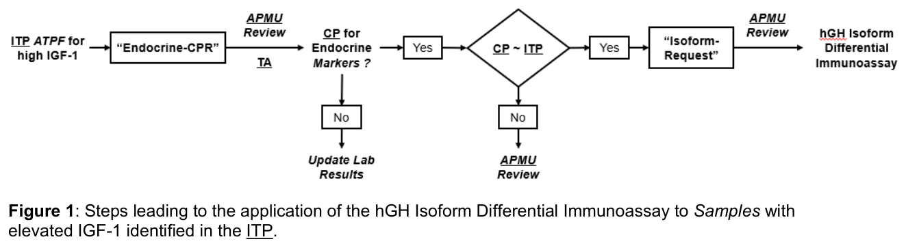

Technical Documents · ISL TD2027ENDO
Edition v1.1, 2027 (version 1.1) · effective 1 January 2027 · current
Retrieved on 26 November 2026 from https://www.wada-ama.org/sites/default/files/2026-09/isl_td2027endo_v1.1.pdf
p. 1
Analytical and Reporting Requirements for the Blood Markers of the Endocrine Module of the Athlete Biological Passport
1.0 Introduction
The purpose of this Technical Document (TD), which constitutes an integral part of the International Standard for Laboratories (ISL)[1] is to harmonize the analysis and reporting of the blood (serum) Markers of human Growth Hormone (hGH) as part of the Endocrine Module of the Athlete Biological Passport (ABP) to uncover the Use of Prohibited Substances associated with hGH biological activity, namely recombinant hGH preparations, hGH secretagogues, hGH analogs and releasing factors, and Insulin-like Growth Factor-I (IGF-I).
1.1 Procedure for Analysis of the Blood Markers of the Endocrine Module
The Analytical Testing Procedure (ATP) involves the measurement of the serum concentrations of two Markers of hGH biological activity, namely IGF-I and N-terminal Pro-peptide of Type III Collagen (PIIINP), which are naturally present in blood and whose concentrations are increased following hGH administration. The measured concentrations of these two Markers are then combined in a score calculated automatically in ADAMS (i.e., the GH-2000 score), which is sex-specific and includes an adjustment for age to reflect the age-related decline in hGH and Marker concentrations.
a) The ATP for the blood endocrine Markers is not a mandatory ATP (see ISL TD ATP[2]) and is not applied to all serum Samples. Therefore, these blood endocrine Markers shall be measured in serum Sample(s) (see Article 2.0) by Laboratories with appropriate analytical capacity and upon request by the responsible Testing Authority (TA) or WADA, and results shall be reported in ADAMS.
b) The analysis of the blood endocrine Markers follows a two (2)-step procedure:
i. An Initial Testing Procedure (ITP) based on the quantification of intact IGF-I by top-down Liquid Chromatography-(tandem) Mass Spectrometry (LC-MSⁿ ) or High-Resolution Mass Spectrometry (LC-HRMSⁿ ), and on the quantification of P-III-NP by chemiluminescent immunoassay using instrumentation having compatible technical characteristics, as determined by WADA, and
ii. A subsequent Confirmation Procedure (CP) may be performed, which consists of the same assay pairing used for the quantification of the concentrations of IGF-I and P-III-NP in the ITP, as well as the identification of IGF-I (in compliance with the ISL TD IDCR[3]). A CP shall be performed when at least one of the three blood endocrine Markers (IGF-I, P-III-NP, or GH-2000) in the Sample constitutes an outlier in the corresponding Passport for elevated values, as determined by the Adaptive Model, triggering an Endocrine - Confirmation Procedure Request ("Endocrine-CPR") in ADAMS. A CP may also be performed upon request to the Laboratory (see Article 4.2).
p. 2
If an outlier for elevated IGF-I from the ITP is confirmed, a subsequent analysis will be performed on the Sample applying the hGH Isoform Differential Immunoassay (see ISL TD GH[4]).
2.0 Assay Pre-analytical Procedure
a) The Laboratory should (usually) receive refrigerated (not frozen¹ ) "A" and "B" blood Samples, which have been collected in serum tubes containing an inert polymeric serum separator gel and a clotting activator (for example: BD Vacutainer ® SSTTM -II Plus tubes, EU ref 367955; BD Vacutainer ® SSTTM - II Plus Advance tubes, EU ref 367954; BD Vacutainer ® SSTTM tubes, US ref 367986) in accordance with the International Standard for Testing (IST) [5]. The use of alternative collection devices shall be validated by the relevant Laboratory(ies) and approved by WADA prior to use for Sample collection.
b) Alternatively, if the clotting and centrifugation of the blood Sample is performed prior to reception at the Laboratory (for example, at the site of Sample collection) or when a blood Sample is shipped from another Laboratory for subcontracted analyses, Samples may be received at the Laboratory as frozen/refrigerated Samples either in the same Sample collection tubes or as separated serum in new tubes.
c) The Laboratory shall check the status of the Sample(s) and the integrity of the collection tubes (e.g., evidence of breakage of the separating gel). The Laboratory shall note any unusual condition of the Sample and record such condition(s) in the Lab Results in ADAMS.
d) Any Samples delivered to the Laboratory in tubes containing an anti-coagulant (for example, whole blood Samples collected in EDTA tubes), or as separated plasma, shall not be analyzed for the blood hGH Markers.
e) The Laboratory shall notify and seek advice from the TA regarding rejection or Analytical Testing of Samples for which irregularities are noted (see ISL[1]).
¹Unless the blood matrix components have been separated before shipment to the Laboratory.
p. 3
2.1 Blood Samples Received as Non-separated in Serum Tubes
| Sample Processing upon Reception | − Both “A” and “B” Samples shall be centrifuged for 10-15 min at 1300-1500 g as soon as possible after reception at the Laboratory. − “A” Sample If the “A” Sample is not opened to be analyzed within five (5) days from Sample collection, then the Laboratory may: • Keep the centrifuged “A” Sample in the Sample collection tube and step-freeze it (at approx. -15°C or less and according to the tube manufacturer’s instructions) until thawing and aliquoting for analysis, or • Aliquot the separated serum fraction into new vials (ensuring that appropriate Laboratory Chain of Custody (see ISL TD LCOC) [6] is maintained), which shall be stored frozen (at approx. -15°C or less) until thawing for analysis. − “B” Sample The centrifuged “B” Sample shall be step-frozen and stored (at approx. -15°C or less and according to the tube manufacturer’s instructions) until use, if needed (see below). [Comment: If the Laboratory transfers the Aliquot into new vials for frozen storage, the vials should ensure proper sealing for optimal storage (cryovials with an “O-ring”). Thawing of Sample(s) for analysis should be done stepwise; Samples shall not be thawed under hot water or any other similar process that risks raising the temperature of the Sample above room temperature. Thawing overnight under refrigeration (2-8 °C) is recommended.] |
|---|---|
| Sample Processing for Analysis | a) ITP An Aliquot of the “A” Sample serum fraction shall be taken for the ITP of the blood endocrine Markers, and shall be processed as follows: • It may be analyzed immediately after aliquoting; or • It may be stored refrigerated (2-8 °C) if analyzed within a maximum of five (5) days from Sample collection; or • It shall be stored frozen (at approx. -15 °C or less) if the analysis will be conducted more than five (5) days from Sample collection. The remaining “A” serum fraction may be kept in the Sample collection tube or aliquoted into new vial(s) and shall be stored frozen (at approx. -15 °C or less) if the analysis will be conducted more than five (5) days from Sample collection2. b) CP The CP shall be performed on a new Aliquot of the remaining “A” Sample serum fraction and shall be conducted immediately after aliquoting. |
²It is recommended that the Laboratory stores the serum Samples frozen (at approx. -70 °C or less) if the TA (or WADA) has requested the Laboratory to place them into long-term storage (> 3 months) for Further Analysis purposes (see also ISL Article 5.3.7.2).
p. 4
2.2 Blood Samples Received as Centrifuged and Frozen/Refrigerated
| Sample Processing upon Reception | a) If Samples are received frozen, they shall remain frozen until thawing and aliquoting for analysis. b) If Samples are received refrigerated, the “A” Sample should be processed to obtain an Aliquot for analysis as soon as possible (as per Article 2.1.), while the “B” Sample shall be stored frozen (at approx. -15 °C or less) until aliquoting for analysis. |
|---|---|
| Aliquot, Storage and Analysis | a) ITP i. Once a serum Aliquot of the “A” Sample is taken for the ITP of the blood endocrine Markers, it should: • Be analyzed immediately or may be stored refrigerated (2-8 °C) if analyzed within a maximum of five (5) days from Sample collection; or • Stored frozen (at approx. -15 °C or less) if the analysis is to be conducted after five (5) days from Sample collection 3. ii. The remaining “A” serum fraction shall be stored as per Article 2.1 above. b) CP The CP shall be performed on a new Aliquot of the remaining “A” Sample serum fraction and shall be conducted immediately after aliquoting. |
[Comment to Articles 2.1 and 2.2: When analyses specific to the ABP are requested, only the "A" Sample shall be considered for the ITP and CP. In cases where the "A" Sample is not suitable for the performance of the ABP Markers analysis (e.g., there is insufficient Sample volume; the Sample container has not been properly sealed or has been broken; the Sample's integrity has been compromised in any way; the "A" Sample is missing), a splitting procedure of the "B" Sample could be performed, as detailed in the ISL[1].]
3.0 Analytical Testing Procedure Validation and Analysis Requirements
For the implementation of the ATPs for the analysis of the blood endocrine Markers of the ABP in routine Doping Control analysis, the Laboratory shall fulfil the following requisites:
a) Validate the Quantitative Procedures (for ITP and CP) for measuring the Marker concentrations, as well as the Qualitative Procedure (for CP) for IGF-I identification, as per the ISL TD VAL[7] requirements.
b) The validated ATPs shall meet the acceptance values for the parameters of assay performance applicable to the separate quantification of IGF-I and P-III-NP concentrations as specified in Article 3.1 (as applicable).
c) The Laboratory shall apply the validated ATPs in accordance with the ATP Analysis Requirements specified in Article 3.2.
p. 5
3.1 ATP Validation Requirements (see also ISL TD VAL[7])
| Endocrine Marker | IGF-I | P-III-NP |
|---|---|---|
| Identification of Markers | The Laboratory shall validate the Qualitative Procedure for confirmation of the identity of IGF-I in accordance with the requirements of the ISL TD IDCR [3] and ISL TD VAL [7] | N/A |
| Limit of Quantification (LOQ) | ≤ 50 ng/mL | ≤ 1 ng/mL |
| Working Range | 50 -1000 ng/mL | 1 – 20 ng/mL |
| Relative Standard Combined Measurement Uncertainty, uc (%) | (≤) 30% at LOQ (≤) 20% at > 150 ng/mL | ≤ 15% |
3.2 ATP Analysis Requirements
| Endocrine Marker | IGF-I | P-III-NP |
|---|---|---|
| Test Method and Instrumentation | Quantitative Procedure (ITP and CP): Top-down (intact) Liquid Chromatography combined with tandem Mass Spectrometry based on triple quadrupole (LC-MSⁿ) or High-Resolution Mass Spectrometry analyzer (LC-HRMS). Qualitative Procedure (CP): LC-MSⁿ (or LC-HRMS) (in compliance with the ISL TD IDCR [3]). | Quantitative Procedure (ITP and CP): Chemiluminescent immunoassay. |
| Aliquot | Shall be measured (ITP and CP) in singlicate (1x) on one (1) serum Aliquot not greater than (≤) 50 μL. | Shall be measured (ITP and CP) in singlicate (1x) on one (1) serum Aliquot according to manufacturer’s instructions. |
| Internal Standards | Stable isotope-labeled IGF-I (e.g., NIST or ProSpec ¹⁵N-IGF-I). | N/A |
| Calibration | A freshly prepared Single Point Calibrator (SPC) shall be included in each analytical batch. The recombinant human IGF-I calibrator from NIST (SRM 2926) should be used to prepare the SPC. Any other calibration material shall be validated against the NIST SRM 2926 calibrator. | As per kit instructions. |
p. 6
| Endocrine Marker | IGF-I and P-III-NP |
|---|---|
| Quality Controls | The QCs shall be prepared either from authentic serum or by spiking a standard solution(s), independent from that used for the calibrator(s), into serum. Following preparation, all QC material shall be aliquoted and stored frozen (preferably at approx. -70 °C or less for long-term storage) until use. At least one (1) serum QC sample representative of the low part of the working range (e.g., at a concentration within the first quartile of the working range) and one (1) serum QC sample representative of the high part of the working range (e.g., at a concentration within the fourth quartile of the working range) shall be used. The QCs may be prepared independently for each Marker or containing both Markers at the appropriate concentrations in a single QC sample. For the CP, at least one QC sample, depending on the initial quantification results for the Markers, shall be included in each confirmatory analytical batch. |
4.0 Confirmation Procedure for the Endocrine Module
4.1 Confirmation Procedure Requests for Blood Endocrine Markers Triggered through ADAMS
a) Once the ITP data of the blood endocrine Markers is entered and matched with the corresponding Doping Control Form (DCF) in ADAMS, the Adaptive Model automatically updates the endocrine Passport. If an outlier is identified based on an abnormally high GH-2000 score, IGF-I, and/or P-III-NP value, an Endocrine-CPR is triggered and sent automatically to the Laboratory through ADAMS. The Laboratory shall ensure the reception and management of CPR notifications using a dedicated ADAMS account(s).
b) The TA³ shall inform the Laboratory whether to proceed or not with the CP of the blood endocrine Markers, within fourteen (14) days from the receipt of the Endocrine-CPR notification.
i. Upon receipt of confirmation to proceed with the CP, the Laboratory shall proceed with the CP of the blood endocrine Markers as soon as possible.
ii. Any justification from the TA or the PC³ to not proceed with the CP shall be provided in writing according to Article 8.6 of the ISL TD APMU[8]. In such cases, the Laboratory shall update the Lab Results in ADAMS for the Sample with a comment stating that the TA or the PC³ , as applicable, requested to not perform the CP, and the reasons given.
iii. In the absence of communication from the TA or the PC³ within fourteen (14) days from the Endocrine-CPR notification, the Laboratory shall proceed with the CP of the blood endocrine Markers.
³The APMU or PC, where the PC is not the TA, may contact, in writing, the Laboratory regarding performance of a CP of the blood endocrine Markers on behalf of the TA. In such cases, the APMU (which may have been bestowed such authority by the PC) or the PC shall copy the relevant TA.
p. 7
c) When the Laboratory receives an Endocrine-CPR for a Sample for which Adverse Analytical Finding(s) (AAF) have been reported for other Prohibited Substance(s) or Prohibited Method(s), the Laboratory shall consult the TA about the need to conduct the CP for the blood endocrine Markers.
4.2 Confirmation Procedure Requests from the Testing Authority, the Passport Custodian, the Athlete Passport Management Unit or WADA.
The Adaptive Model will also flag abnormally low or variable endocrine Markers. However, in such cases the Laboratory will not receive an automatic notification through ADAMS. Instead, the Athlete Passport Management Unit (APMU) will advise the PC (who will advise the TA, if different) on whether the Sample, or other Samples from the corresponding Passport, shall be subjected to a CP for the blood endocrine Markers and the application of the hGH Isoform Differential Immunoassay. Therefore, in these cases the Laboratory shall receive a written request from the TA³ , or WADA, before proceeding with the CP.
4.3 Confirmation of Blood Endocrine Marker Values
The CP for the blood endocrine Markers following receipt of an Endocrine-CPR, or upon request, consists of the application of the same assay pairing used for the quantification of the concentrations of IGF-I and P-III-NP in the ITP as well as the identification of IGF-I (in compliance with the ISL TD IDCR[3]).
4.4 hGH Isoform Differential Immunoassay Requests ("Isoform-Requests") triggered through ADAMS
a) Once the CP data of the blood endocrine Markers is entered and matched with the corresponding Passport in ADAMS, the Adaptive Model automatically updates the endocrine Passport with the confirmed Marker values.
b) If the ITP triggers an Atypical Passport Finding (ATPF) for high IGF-I, which is confirmed in the subsequent CP, an Isoform-Request for the performance of the hGH Isoform Differential Immunoassay (see ISL TD GH [4]) is triggered and sent automatically to the Laboratory through ADAMS (see Figure 1).

- ITP ATPF for high IGF-1 → "Endocrine-CPR" → (APMU Review; TA) → CP for Endocrine Markers?
- No → Update Lab Results
- Yes → CP ~ ITP? – No → APMU Review; Yes → "Isoform-Request" → (APMU Review) → hGH Isoform Differential Immunoassay
Figure 1: Steps leading to the application of the hGH Isoform Differential Immunoassay to Samples with elevated IGF-1 identified in the ITP.
p. 8
5.0 Reporting Results for the Blood Endocrine Markers
a) The IGF-I and P-III-NP concentrations shall be reported in ADAMS in nanograms per milliliter (ng/mL).
[Comment to Article 5.0 a): For the purposes of the Endocrine Module of the ABP, the GH-2000 score does not need to be calculated or reported by the Laboratory; it will be automatically calculated in ADAMS].
b) If the measured concentration(s) of IGF-I and/or P-III-NP is below the LOQ of the assay, the Laboratory shall report a value of "-1" for the affected concentration in ADAMS.
c) If the concentration(s) of IGF-I and/or P-III-NP cannot be determined or the Marker(s) cannot be identified, the affected Marker(s) shall be reported as "-1" and the Laboratory shall make a corresponding comment in the Lab Results in ADAMS (e.g., matrix interferences).
6.0 References
[1] The World Anti-Doping Code International Standard for Laboratories (ISL).
[2] WADA Technical Document ISL TD ATP: Analytical Testing Procedures.
[3] WADA Technical Document ISL TD IDCR: Minimum Criteria for Chromatographic-Mass Spectrometric Confirmation of the Identity of Analytes for Doping Control Purposes.
[4] WADA Technical Document ISL TD GH: Human Growth Hormone (hGH) Isoform Differential Immunoassays for Doing Control Analyses.
[5] The World Anti-Doping Code International Standard for Testing (IST).
[6] WADA Technical Document ISL TD LCOC: Laboratory Chain of Custody.
[7] WADA Technical Document ISL TD VAL: Minimum Requirements for Validation of Analytical Testing Procedures for Doping Control.
[8] WADA Technical Document ISL TD APMU: Athlete Passport Management Unit Requirements and Procedures
[Comment to Article 6.0: Current versions of WADA International Standards and Technical Documents may be found at https://www.wada-ama.org/en/what-we-do/international-standards]
Retrieved on 26 November 2026 from https://www.wada-ama.org/sites/default/files/2026-09/isl_td2027endo_v1.1.pdf